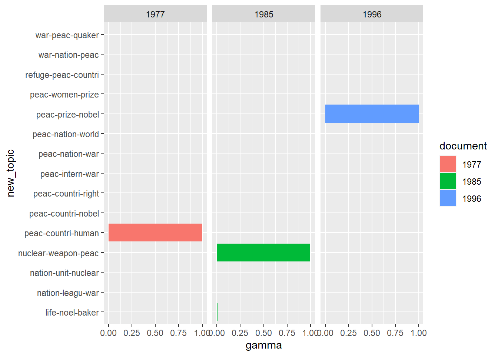

Session 3.2: Topic modeling
library(tidyverse)
library(tidytext)
library(stm)
library(topicmodels)
library(quanteda)
library(quanteda.textstats)
library(quanteda.textplots)Today’s script is here.
1 Reading into topic modeling packages (topicmodels)
There are a number of topic model instantiations in R. We will go
through one of the more popular ones – topicmodels which
plays very nicely with the tidyverse.1
topicmodels’s main topic model function is
LDA(), which stands for Latent Dirichlet Allocation, a type
of topic model and often used as shorthand for topic models in general.
It takes a DTM as input and gives us an object of class LDA
as output, which we can then analyze and visualize in the tidyverse.
There are many points where we can customize, adjust parameters and so
on but the one we must specify is the number of topics. This is
something that often takes some fiddling with. Unless you have reason to
think that the number of topics is extremely limited in a certain corpus
one generally uses between ~20-50 topics. The other parameter it makes
sense to think of prior to, or under, analysis is document size. As
we’ve seen, a DTM will break up a text without concern for order within
individual documents. So large documents will be extremely generalized
in a DTM. It could well be reasonable to break up books, for example, by
chapter. We could go more finer grained as well – chunking by paragraph
might make sense sometimes, too. Much will depend on the corpus and
object of analysis. Experiment and see what leads to the most
understandable and coherent topics.
options(stringsAsFactors = FALSE)
library(tidyverse)
library(tidytext)
library(topicmodels)
# read in the dataframe into R as normal
nobel_tidy <- read_rds("data/nobel_stemmed.Rds") %>%
select(Year, Laureate, word_stem) %>%
rename(Year = Year, Laureate = Laureate, words = word_stem)
# transform dataframe to DTM
nobel_dtm <- nobel_tidy %>%
group_by(Year) %>%
count(words, sort = TRUE) %>%
cast_dtm(Year, words, n)There are many points where we can customize, adjust parameters and so on but the one we must specify is the number of topics. This is something that often takes some fiddling with. Unless you have reason to think that the number of topics is extremely limited in a certain corpus one generally uses between ~15-50 topics (very roughly).
Another parameter it makes sense to think of prior to, or under, analysis is document size. As we’ve seen, a DTM will break up a text without concern for order within individual documents. So large documents will be extremely generalized in a DTM. It could well be reasonable to break up books, for example, by chapter. We could go more finer grained as well – chunking by paragraph might make sense sometimes, too. Much will depend on the corpus and object of analysis. Experiment and see what leads to the most understandable and coherent topics.
We are also using the corpus that we have already cleaned and removed stopwords from. We might also question if certain words are turning up so much in every document that they won’t add anything to the topics that the topic model finds (removing frequently appearing words will also reduce the time it takes for the algorithm to fit the topic model). We might consider if, in the Nobel corpus, the word “nobel” will add anything to any of the topics, especially if we are treating the documents as the speeches as a whole. It might or might or not, topic models take some experimentation.
Lastly, the alpha parameter controls how much documents come to be dominated by one or few topics or if the topics are more evenly distributed over documents. This parameter is automatically optimized by the algorithm if the user does not set it, but often algorithmic optimization does not lead to the best model fit from the standpoint of a human. This model tends toward a low alpha and very uneven topic spread so we’ll set it ourselves. Again, this is something the analyst must experiment with.
k = 15
alpha = 2
nobel_tm <- LDA(nobel_dtm, k = k, alpha = alpha)Fitting the model involves us telling R finding a distributions that best match the corpus we have given the general structural assumptions the topic model takes. There are different methods for doing this and they might take a while. We are interested in two distributions: theta (\(\theta\)) – the proportion of each document devoted to which topics, and beta (\(\beta\)) – the proportion of each topic made up by which words (see the presentation pdf for details).
Let’s first take a look at the output of the topic model. We call
posterior() to get these so-called posterior
distributions.
str(posterior(nobel_tm))## List of 2
## $ terms : num [1:15, 1:8435] 4.69e-04 4.68e-306 1.04e-04 1.64e-02 7.46e-04 ...
## ..- attr(*, "dimnames")=List of 2
## .. ..$ : chr [1:15] "1" "2" "3" "4" ...
## .. ..$ : chr [1:8435] "refuge" "nuclear" "weapon" "war" ...
## $ topics: num [1:94, 1:15] 7.02e-06 9.99e-06 1.01e-05 7.64e-06 7.64e-06 ...
## ..- attr(*, "dimnames")=List of 2
## .. ..$ : chr [1:94] "1981" "2017" "1954" "1925" ...
## .. ..$ : chr [1:15] "1" "2" "3" "4" ...If you call str() on this object you see
topicmodels has returned two distributions, one called
term that is made up of a matrix of the twenty topics on
one axis and the 8063 unique words in the corpus on the other, with each
entry indicating likelihood of that word turning up given the topic (we
might think of this as the proportion of the topic taken up by each word
in the corpus). It is a probability distribution so each words
probability within a given topic has to sum to 1. This is the
beta matrix. The topics distribution we see is a matrix
size 92 x 20, the likelihood of each document (speech) containing each
of 20 topics – also summing to 1 within each document and that we might
think of as proportions. So what do we do with this?
The most useful thing to look at straight away are the highest words in each topic – do the topics make sense to a human?
terms(nobel_tm, 15)## Topic 1 Topic 2 Topic 3 Topic 4 Topic 5 Topic 6
## [1,] "peac" "peac" "peac" "peac" "peac" "peac"
## [2,] "countri" "nuclear" "nation" "war" "countri" "world"
## [3,] "right" "weapon" "war" "refuge" "war" "prize"
## [4,] "nation" "world" "world" "intern" "world" "women"
## [5,] "human" "war" "countri" "organ" "ilo" "nobel"
## [6,] "declar" "intern" "unit" "countri" "prize" "countri"
## [7,] "peopl" "human" "intern" "quaker" "nobel" "human"
## [8,] "south" "peopl" "time" "women" "intern" "peopl"
## [9,] "unicef" "prize" "confer" "nation" "nation" "develop"
## [10,] "world" "nation" "polici" "peopl" "peopl" "right"
## [11,] "develop" "agreement" "presid" "offic" "govern" "committe"
## [12,] "african" "paul" "pearson" "life" "organ" "wheat"
## [13,] "freedom" "power" "prize" "movement" "human" "nation"
## [14,] "organ" "time" "lester" "baker" "agreement" "polit"
## [15,] "white" "test" "econom" "unit" "develop" "norwegian"
## Topic 7 Topic 8 Topic 9 Topic 10 Topic 11 Topic 12
## [1,] "war" "refuge" "peac" "war" "peac" "nation"
## [2,] "nation" "war" "nobel" "peac" "human" "peac"
## [3,] "peac" "countri" "prize" "nation" "prize" "american"
## [4,] "time" "nation" "peopl" "unit" "peopl" "unit"
## [5,] "life" "offic" "norwegian" "world" "nobel" "congo"
## [6,] "world" "marshal" "nation" "intern" "world" "war"
## [7,] "leagu" "peac" "award" "organ" "polit" "kim"
## [8,] "europ" "world" "parti" "committe" "award" "intern"
## [9,] "germani" "nansen" "process" "red" "san" "hammarskjöld"
## [10,] "peopl" "peopl" "conflict" "cross" "committe" "secretari"
## [11,] "polici" "prize" "countri" "countri" "mother" "aid"
## [12,] "bunch" "time" "committe" "leagu" "right" "pact"
## [13,] "countri" "govern" "ahtisaari" "prize" "life" "polit"
## [14,] "franc" "award" "war" "american" "respect" "countri"
## [15,] "power" "polit" "polit" "confer" "person" "lama"
## Topic 13 Topic 14 Topic 15
## [1,] "leagu" "peac" "nuclear"
## [2,] "nation" "prize" "peac"
## [3,] "war" "nobel" "weapon"
## [4,] "peac" "world" "prize"
## [5,] "disarma" "right" "nobel"
## [6,] "intern" "human" "intern"
## [7,] "time" "peopl" "award"
## [8,] "world" "award" "world"
## [9,] "public" "countri" "war"
## [10,] "govern" "committe" "committe"
## [11,] "cecil" "war" "presid"
## [12,] "british" "time" "disarma"
## [13,] "organ" "norwegian" "countri"
## [14,] "speech" "nation" "carter"
## [15,] "freedom" "laureat" "norwegian"We can, of course, work directly with these data structures but per our approach in this workshop, we’re going to tidy our results and take the data interpretation and visualization back to the tidyverse where we have all its tools at our disposal.
2 Making sense of and visualizing output
Let’s first plot the top words in each topic. This is generally where
you want to start in evaluating a topic model – are the topics
interpretable. We use tidy() to transform the beta matrix
into tidy format (one word per row) and then it is a simple task for us
to plot it in ggplot.
terms <- tidy(nobel_tm, matrix = "beta")
words_in_topics <- terms %>%
group_by(topic) %>%
slice_max(beta, n = 10) %>%
ungroup() %>%
arrange(topic, -beta)
words_in_topics %>%
mutate(term = reorder_within(term, beta, topic)) %>%
ggplot(aes(beta, term, fill = factor(topic))) +
geom_col(show.legend = FALSE) +
facet_wrap(~ topic, scales = "free") +
scale_y_reordered()Let’s turn to the matrix of probabilities of topics over documents.
To keep us on our toes topicmodels calls this not theta but
gamma (\(\gamma\)).
topics_in_documents <- tidy(nobel_tm, matrix = "gamma")
topics_in_documents## # A tibble: 1,410 × 3
## document topic gamma
## <chr> <int> <dbl>
## 1 1981 1 0.00000702
## 2 2017 1 0.00000999
## 3 1954 1 0.0000101
## 4 1925 1 0.00000764
## 5 1926 1 0.00000764
## 6 1968 1 1.00
## 7 2013 1 0.0000143
## 8 1988 1 0.0000121
## 9 1953 1 0.00000627
## 10 2016 1 0.0000123
## # … with 1,400 more rows
## # ℹ Use `print(n = ...)` to see more rowsThis tells us the estimated proportion of words in each given document devoted (generated by) to a specific topic. A problem here is that numbering topics makes it hard to figure out what this means. So we can first rename the topics. We can do this by hand (recommended) or automatically based on the highest ranking words in the previous beta matrix.
# labelling by hand, we would extend this to 1:20, and given 20 topics if we wanted to name them all
#hand_topics <- tibble(old_topic = 1:3, new_topic = c("International peace", "Nuclear", "Peac and war"))
#topics_in_documents %>%
# left_join(hand_topics_topics, by=c("topic" = "old_topic"))
# alternative two, easier for demonstration purposes on a sub-optimally-fit topic model
(auto_topics <- apply(terms(nobel_tm, 3), 2, paste, collapse = "-")) # pastes together the top three terms for each topic in the nobel topic model## Topic 1 Topic 2 Topic 3
## "peac-countri-right" "peac-nuclear-weapon" "peac-nation-war"
## Topic 4 Topic 5 Topic 6
## "peac-war-refuge" "peac-countri-war" "peac-world-prize"
## Topic 7 Topic 8 Topic 9
## "war-nation-peac" "refuge-war-countri" "peac-nobel-prize"
## Topic 10 Topic 11 Topic 12
## "war-peac-nation" "peac-human-prize" "nation-peac-american"
## Topic 13 Topic 14 Topic 15
## "leagu-nation-war" "peac-prize-nobel" "nuclear-peac-weapon"(auto_topics <- tibble(old_topic = 1:k, new_topic = auto_topics)) # make as tibble where numeric topics are matched with the auto generated ones## # A tibble: 15 × 2
## old_topic new_topic
## <int> <chr>
## 1 1 peac-countri-right
## 2 2 peac-nuclear-weapon
## 3 3 peac-nation-war
## 4 4 peac-war-refuge
## 5 5 peac-countri-war
## 6 6 peac-world-prize
## 7 7 war-nation-peac
## 8 8 refuge-war-countri
## 9 9 peac-nobel-prize
## 10 10 war-peac-nation
## 11 11 peac-human-prize
## 12 12 nation-peac-american
## 13 13 leagu-nation-war
## 14 14 peac-prize-nobel
## 15 15 nuclear-peac-weapon(topics <- topics_in_documents %>%
left_join(auto_topics, by=c("topic" = "old_topic")))## # A tibble: 1,410 × 4
## document topic gamma new_topic
## <chr> <int> <dbl> <chr>
## 1 1981 1 0.00000702 peac-countri-right
## 2 2017 1 0.00000999 peac-countri-right
## 3 1954 1 0.0000101 peac-countri-right
## 4 1925 1 0.00000764 peac-countri-right
## 5 1926 1 0.00000764 peac-countri-right
## 6 1968 1 1.00 peac-countri-right
## 7 2013 1 0.0000143 peac-countri-right
## 8 1988 1 0.0000121 peac-countri-right
## 9 1953 1 0.00000627 peac-countri-right
## 10 2016 1 0.0000123 peac-countri-right
## # … with 1,400 more rows
## # ℹ Use `print(n = ...)` to see more rowsNow we have our data in a familiar format we can subset and visualize. Perhaps we’d like to compare the topic distribution in several topics.
topics %>%
filter(document %in% c(1977, 1985, 1996)) %>% # the documents we want to compare
ggplot(aes(new_topic, gamma, fill = document)) +
geom_col() +
coord_flip() +
facet_wrap(~ document, ncol = 3)
We can visualize the distribution of all topics over time.
topics %>%
ggplot(aes(document, gamma)) +
geom_col(aes(group = new_topic, fill = new_topic)) +
scale_x_discrete(breaks = seq(1905, 2019, 10))Or look at the distribution of specific topics over time.
# This one requires a more balanced topic mixture to be very meaningful, which the Nobel corpus with its current fit does to have
topics %>%
filter(str_detect(new_topic, "war")) %>%
ggplot(aes(document, gamma)) +
geom_line(aes(group = new_topic, color = new_topic)) +
scale_x_discrete(breaks = seq(1905, 2019, 10))
3 STM
There are several packages in R that fit topic models, most notably
stm which is incorporates a host of handy visualization
tools as well as the capacity to incorporate covariates into the model
fit.
Roberts, Stewart, and Tingley (2019).
Here’s a brief example of how we can use quanteda to
create a document-feature matrix and then throw that into
stm.
nobel <- read_rds("nobel_cleaned.Rds")
nobel_decade <- nobel %>%
mutate(decade = Year %/% 10 * 10) %>%
mutate(Period = ifelse(Year <= 1945, "Pre-WWII", "Post-WWII")) %>%
corpus(text_field = 'AwardSpeech') %>%
tokens(remove_numbers = TRUE, remove_punc = TRUE) %>%
dfm() %>%
dfm_remove(pattern = stop_words$word) %>%
dfm_group(groups = decade)
fit10 <- stm(nobel_decade, K = 10, max.em.its = 5, init.type = "Spectral")
plot(fit10)This shows us the ten topics we requested it find and the expected
proportions. The topics dominate individual documents it looks like,
making this perhaps not the best example, but one we’ll do just to show
the mechanics of stm.
nobel_periods <- nobel %>%
#mutate(decade = Year %/% 10 * 10) %>%
mutate(Period = ifelse(Year <= 1945, "Pre-WWII", "Post-WWII")) %>%
corpus(text_field = 'AwardSpeech') %>%
tokens(remove_numbers = TRUE, remove_punc = TRUE) %>%
dfm() %>%
dfm_remove(pattern = stop_words$word)
# setting EM iterations to 10 for speed -- normally this should be many more (often set at 75)
fit10_period <- stm(nobel_periods, K = 10, content =~Period, prevalence =~ Period, max.em.its = 5, init.type = "Spectral")
plot(fit10_period)We have now fitted this topic model with the covariable
Period denoting pre- or post-WWII and this then allows us
to further examine, for example, for each topic the words in the topic
that are more associated with one variable or the other.
plot(fit10_period, type = "perspectives", topics = 9)3.1 Excercises
- Run a topic model on the sustainability report corpus. How can we deal with year variables when they are not the name of the document?
- Experiment more with the Nobel corpus. Can you find a better/more meaningful model fit?
3.2 Other topic modeling resources
This is only the most basic of introductions to topic modeling. For more information on topic modeling and analysis in the tidyverse, see chapter 6 of Silge and Robinson (2017).
For a good explainer on topic models, see Underwood (2012).
4 Cosine frequency
Another way to think about differences between documents is cosine frequency. If we imagine each document being represented by a vector in n-dimensional space, where the values of the vector are the counts (more often tf-idfs in practice) of words contained in the document, then we can use very simple math to measure the angle of distance between two document vectors. This is refered to as cosine difference - stemming from the law of cosines and closely related to the dot product for those who remember that from math class. Fittingly for cosines, 1 denotes that the vectors are pointing the exact same direction and that there is no different – what would happen if measured the distace between two documents or multiples of the same document. Zero denotes no similarity – we would say they are orthogonal – there is no overlap in vocabulary. Important to remember in interpreting cosine distances is that they are only significant between the two documents you are comparing – if document A has low cosine distance to both documents B and C, this does not denote that B and C are similar, they are simply both not similar to A (they might be dissimilar in quite different ways.)
Let’s look at a quick implementation.
(cosine_diff <- textstat_simil(nobel_decade, method = "cosine"))## textstat_simil object; method = "cosine"
## 1900 1910 1920 1930 1940 1950 1960 1970 1980 1990 2000 2010
## 1900 1.000 0.676 0.453 0.598 0.561 0.442 0.441 0.609 0.518 0.551 0.571 0.553
## 1910 0.676 1.000 0.387 0.549 0.514 0.406 0.387 0.545 0.458 0.469 0.488 0.458
## 1920 0.453 0.387 1.000 0.762 0.710 0.686 0.571 0.602 0.579 0.508 0.503 0.519
## 1930 0.598 0.549 0.762 1.000 0.747 0.690 0.605 0.675 0.651 0.588 0.612 0.585
## 1940 0.561 0.514 0.710 0.747 1.000 0.711 0.663 0.693 0.645 0.582 0.623 0.579
## 1950 0.442 0.406 0.686 0.690 0.711 1.000 0.644 0.611 0.658 0.530 0.533 0.512
## 1960 0.441 0.387 0.571 0.605 0.663 0.644 1.000 0.681 0.694 0.584 0.614 0.615
## 1970 0.609 0.545 0.602 0.675 0.693 0.611 0.681 1.000 0.796 0.777 0.790 0.746
## 1980 0.518 0.458 0.579 0.651 0.645 0.658 0.694 0.796 1.000 0.759 0.785 0.736
## 1990 0.551 0.469 0.508 0.588 0.582 0.530 0.584 0.777 0.759 1.000 0.806 0.766
## 2000 0.571 0.488 0.503 0.612 0.623 0.533 0.614 0.790 0.785 0.806 1.000 0.803
## 2010 0.553 0.458 0.519 0.585 0.579 0.512 0.615 0.746 0.736 0.766 0.803 1.000We have used quanteda to do this and with it come a
bunch of nice features (you see above how easy it was to stopword).
Quanteda also makes it easy to trim our corpus in ways that
might make more sense to run analysis on.
dfm_small <- dfm_trim(nobel_decade, min_termfreq = 3, min_docfreq = 2)Quanteda has multiples ways to test proximity, distance,
and so on. One way of visualizing distance might be clustering – to take
all documents (here the documents are each decade’s worth of Nobel award
speeches) and break them into two clusters based on their Euclidean
distance, to do it again, and again, and so forth.
eu_dist <- textstat_dist(dfm_weight(nobel_decade, scheme = "prop"))
cluster <- hclust(as.dist(eu_dist))
cluster$labels <- docnames(nobel_decade)
plot(cluster, xlab = "", sub = "", main = "Clustered Euclidean Distance")Finally, another way to envision differences between documents is to calculate the “keyness”, which analyses relative term frequency between documents. Here we make the target group post-WWII Nobel speeches, and the baseline those from 1905 up to WWII.
keyness <- textstat_keyness(nobel_decade, target = nobel_decade$decade >= 1945)
textplot_keyness(keyness)References
2022.